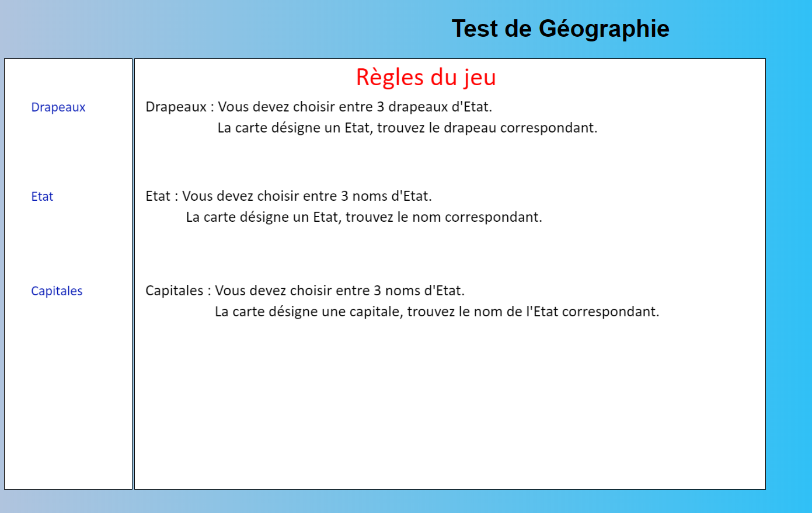

Pendant mon année de Terminale S-SI option ISN j'ai dû créer un jeu qui se nommait "Programme d’entraînement à la géographie" par groupe de trois on a décidé ensemble de le faire sur le thème des Etats-Unis.
Ce projet était pour moi un excellent moyen de réviser la géographie en particulier celle des États-Unis, pour les enfants qui ont du mal à apprendre avec des manuels ou des supports plus classiques.
Nous avons utilisé pour cela du HTML ainsi que du CSS et également du Javascript.
Cela m'a permis de m'améliorer au niveau de ces trois langages de programmations qui sont très importants pour la poursuite de mes études.
